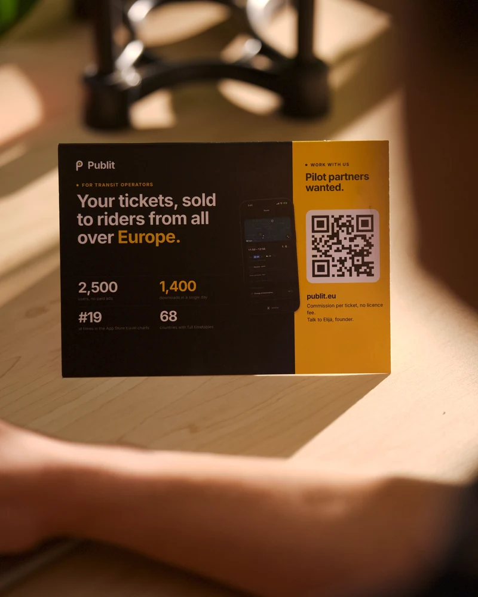

Vertrieb als Vermittler
Publit verkauft Ihr Ticket in Ihrem Namen. Sie bleiben Vertragspartner des Fahrgasts und bestimmen Tarif und Preis. Der Fahrgast zahlt den normalen Preis, ohne Aufschlag.
Für Verkehrsunternehmen, Verbünde, Bahn- und Busgesellschaften
Publit ist eine App für Nah- und Fernverkehr in ganz Europa. Fahrgäste planen darin ihre ganze Reise, von der Straßenbahn bis zum Nachtzug. Wir vermitteln Ihr Ticket direkt an dieser Verbindung. Sie bleiben Anbieter, Tarife und Preise bleiben Ihre.
Offen gesagt: Der Ticketkauf in der App ist noch nicht live. Routenplanung, Live-Begleitung und Ticket-Ablage sind es. Für den Verkauf suchen wir jetzt Pilotpartner.

Wer heute von Wien zum Flughafen München fährt, braucht drei Apps: eine für die Stadt, eine für den Zug, eine für die andere Stadt. Jede mit eigenem Konto und eigener Zahlung. Viele Reisende geben auf oder nehmen das Auto. Und für Sie heißt das: Der Gast aus Lyon findet Ihre Tageskarte nie.
Publit verkauft Ihr Ticket in Ihrem Namen. Sie bleiben Vertragspartner des Fahrgasts und bestimmen Tarif und Preis. Der Fahrgast zahlt den normalen Preis, ohne Aufschlag.
Publit erhält eine Provision pro verkauftem Ticket. Eine Lizenzgebühr gibt es nicht: Wir verdienen nur, wenn Sie verkaufen.
Publit läuft in 15 Sprachen und überall, wo es offene Fahrplandaten gibt. So erreichen Sie Pendler aus dem Nachbarland und Gäste auf Städtereise, die Ihre eigene App nie geladen hätten.
Wir bauen auf dem auf, was Sie haben: zuerst ein Link in Ihren bestehenden Ticketshop, später Ihre Vertriebsschnittstelle. Eine eigene App-Entwicklung brauchen Sie dafür nicht.
Kein Konto, kein Tracking, keine Werbung. Die App sammelt keine Bewegungsprofile. Entwickelt und betrieben in der EU.
Der Code der Apps liegt offen auf GitHub (AGPL-3.0). Sie können nachlesen, was die App tut, bevor Sie mit uns arbeiten.
Wir beginnen klein und messbar. Jeder Schritt funktioniert für sich, keiner verpflichtet zum nächsten.
Einzel- und Tageskarten für Gäste, die Ihre Stadt nicht kennen und Ihre App nicht haben.
Ein weiterer Vertriebskanal mit Fahrgästen, die ihre Reise von Tür zu Tür planen, samt Nahverkehr am Ziel.
Ihre Gäste kommen aus ganz Europa. Publit führt sie in ihrer Sprache vom Flughafen bis zum Hotel.
Mitarbeitende und Besucher finden den Weg zu Ihrem Standort mit Öffis, ohne Konto und ohne Schulung.
| Routenplanung in Europa | Live. Nah- und Fernverkehr in einer Verbindung, über Ländergrenzen hinweg, mit Echtzeit, wo Betriebe sie veröffentlichen. |
|---|---|
| Live-Begleitung | Live. Vom Losgehen bis zum Aussteigen, auf iPhone, Apple Watch und Android. |
| Eigene Tickets ablegen | Live. KlimaTicket, Deutschlandticket und andere Tickets mit Code für die Kontrolle. |
| Verweis in Ticketshops | Technisch fertig, wird mit Partnern freigeschaltet. |
| Ticketkauf in der App | Noch nicht live. Startet mit den ersten Pilotpartnern. |
Unabhängig vom Ticketverkauf: Wenn Sie Fahrplan und Echtzeit als offene Daten bereitstellen, sehen Ihre Fahrgäste in Publit Verspätungen und Ausfälle. Ohne Vertrag und ohne Kosten.
Eine Provision pro verkauftem Ticket, keine Lizenzgebühr. Die Höhe der Provision vereinbaren wir gemeinsam im Pilot.
Sie. Publit tritt als Vermittler auf. Tarif, Preis und Beförderungsbedingungen bleiben Ihre.
Noch nicht. Der Kauf in der App ist in Arbeit und startet mit Pilotpartnern. Ein Verweis in Ihren bestehenden Ticketshop ist schon heute möglich.
Für den ersten Schritt nur die Adresse Ihres Ticketshops. Für den Kauf in der App klären wir im Pilot gemeinsam, welche Vertriebsschnittstelle passt.
So wenig wie möglich. Die App hat kein Konto und kein Tracking. Für einen Kauf werden nur die Daten verarbeitet, die für Ticket und Zahlung nötig sind.
Elija Friedrich-Ulrich hat Publit in Wien gegründet und entwickelt die Apps. Publit wird als Einzelunternehmen geführt.
Wir suchen einen Verkehrsverbund für Nahverkehrstickets und eine Bahn- oder Busgesellschaft für den Fernverkehr. 20 Minuten reichen für ein erstes Gespräch.
Elija Friedrich-Ulrich, Gründer
support@publit.eu · +43 676 7359197